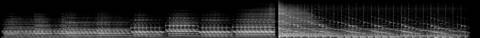
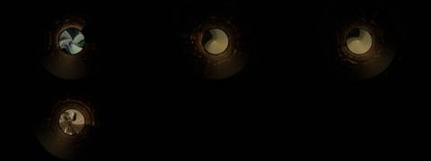
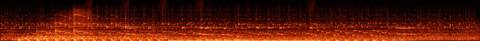

Afterlight / V Mosaic / AFL-16
V · Mosaic · AFL-16 of 22 · 1:22
Magic Circle
The note that produced it
On this track: From one minute on.
“I want each to be a mosaic assemblage of the tracks, never the whole track. Each a separate video experiment to see the samples, get the groove. Aim for 1–2 minutes per track.”
“A different attempt and technology for each Afterlight song / music video experiment”: readable as embers from their spectrograms, as Gaussian splats of places.
What was made
The study’s own spectrum pressed into a turning record, time as angle and pitch as radius, with an archive moon wound into a spiral on the label.
Two-step loop at 1:01 · a bar replayed in rotating slice order · echoes ripple from the label
What came back
The note on this version, which produced AFL-17 Warmth, Air, Food, Water:
Good textures, busy in places, and it ducks out nicely.
Images made while working: contact sheets, check frames, spectrograms, the stills compared before and after a fix. Tap one to see it full size.






No separate critic agent was run on this cut. The critique came from the director, in the notes on either side of it.
On the cut before
From one minute on.
On this cut
Good textures, busy in places, and it ducks out nicely.
Sample map
Every sound placed in the 1:22 study, 44 events by layer, coloured by the track it was cut from. The bars under the map are the whole source tracks; the lit spans are the parts actually used (approximate: stretched and frozen samples are counted by where they start).
The recipe
The function that composed this study, exactly as it ran.
def circle():
"""from one minute on: the slow two-step, a circle of its own echoes, the sustained tones frozen into a ring"""
n = 'circle'; P = 3.175; L0 = snap(n, 60.96); m = Mix(82)
m.put('ring', freeze(cut(n, 66, 72), 82, grain=0.3, dens=20), 0, 0.35, n, 66, 'freeze')
t = 3.0
m.put('loop', sweep(loop(n, L0, P, 4), 250, 12000), t, 1.0, n, L0, 'loop'); place_kicks(m, n, L0, P, t, 4); t += 4 * P
for k in range(4):
a = L0 + P * (2 + k); m.put('loop', loop(n, a, P, 2), t, 1.0, n, a, 'loop'); place_kicks(m, n, a, P, t, 2)
m.put('echo', echo(cut(n, a + P * 0.75, a + P), P / 3, 0.6, 7), t + 2 * P - P / 4, 0.7, n, a + P * 0.75, 'echo'); t += 2 * P
# the circle: one bar played forward, then its slices in a rotating order
sl = steps(n, L0 + 4 * P, P, 8)
for rot in range(4):
play_pattern(m, 'chop', sl, [(i + rot * 3) % 8 for i in range(8)], t + rot * P, P / 8, 0.9, n, L0 + 4 * P, P)
place_kicks(m, n, L0 + 4 * P, P, t, 4); t += 4 * P
m.put('loop', loop(n, snap(n, 90), P, 4), t, 1.0, n, 90, 'loop'); place_kicks(m, n, snap(n, 90), P, t, 4); t += 4 * P
m.put('ember', ember(cut(n, 100, 104), 16, 0.8), t, 1.0, n, 100, 'tail')
m.duck(['ring', 'chop'], 0.4, release=0.4)
return mThe picture technique
class Record:
"""the mosaic's spectrum pressed into a turning record: angle is time, radius is pitch; the label is a moon from the archive, wound into a spiral"""
def __init__(s, ctx, cats=('moo', 'rit', 'spa'), seed=4):
s.c = ctx; s.label = [clip_frames(i, 240, 240, 12, 6) for i in footage(cats, 3, seed)]
s.cx, s.cy = W / 2, H / 2 + 10; dx, dy = XX - s.cx, (YY - s.cy) * 1.0
s.R = np.sqrt(dx * dx + dy * dy); s.TH = np.arctan2(dy, dx); s.r0, s.r1 = 110.0, 352.0
s.ripples = []; s.emb = Embers(15000, 6); s.echoes = sorted([e['t'] for e in ctx.events if e['tag'] in ('echo', 'tail')])
def frame(s, t, dt):
c = s.c; w = 0.9 # radians per second of history
rot = t * w; hist = (rot - s.TH) % (2 * math.pi) / w # seconds ago, for each pixel
col_t = np.clip(t - hist, 0, c.dur); ci = np.clip((col_t * c.melfps).astype(int), 0, c.mel.shape[1] - 1)
rb = np.clip((s.R - s.r0) / (s.r1 - s.r0) * 127, 0, 127).astype(int)
v = c.mel[rb, ci] * ((s.R > s.r0) & (s.R < s.r1)) * (t - hist >= 0)
groove = 0.55 + 0.45 * np.sin(s.R * 1.1) ** 2
fresh = np.exp(-hist / 3.0) * 0.8 + 0.2
img = (v ** 1.5 * groove * fresh * 1.8)[..., None] * thermal(0.35 + 0.6 * v)
sheen = np.maximum(np.cos(s.TH - t * 0.3), 0) ** 6 * ((s.R > s.r0) & (s.R < s.r1)) * 0.12
img += (sheen * groove)[..., None] * GOLD
# label: archive moon in a slow log-polar swirl
L = s.label[int(t / 9) % len(s.label)]; f = L[int(t * 12) % len(L)].astype(np.float32)
inside = s.R < s.r0 - 6; lr = np.log1p(s.R) / np.log1p(s.r0); th2 = (s.TH + t * 0.6 + lr * 2.0) % (2 * math.pi)
u = (120 + np.cos(th2) * lr * 118); vv = (120 + np.sin(th2) * lr * 118)
lab = np.stack([map_coordinates(f[..., ch], [vv[inside], u[inside]], order=1) for ch in range(3)], -1)
lab = lab * np.array([1.0, 0.8, 0.55]) * 0.8; img[inside] += lab.astype(np.float32)
# echoes as ripples
for e in s.echoes:
a = t - e
if 0 < a < 3: rr = s.r0 + a * 160; img += (np.exp(-((s.R - rr) / 3) ** 2) * (1 - a / 3) * 0.6)[..., None] * GOLD
kk = c.kick(t, 0.15)
if kk > 0.95:
th = np.random.default_rng(int(t * 50)).random(200) * 6.283
s.emb.emit(s.cx + np.cos(th) * s.r1, s.cy + np.sin(th) * s.r1, vx=-np.sin(th) * 160, vy=np.cos(th) * 160 - 30, T=1.0, life=2.0, spread=20)
s.emb.step(t, dt, wind=(0, -15), buoy=-20); img += s.emb.draw(t, 0.9, 0.08)
return img + gaussian_filter(img, (5, 5, 0)) * 0.4Files
The scripts that made this version, as plain text.
- compose.py254 linesthe nine mosaics: every cut, loop and freeze
- sampler.py154 linesloop, stretch, reverb, echo, freeze, tape stop
- mix.py85 linesthe 178-second set
- sound_design.py91 linesneedle drop, inhales, risers, sub, tape bus
- engines.py367 linesthe ten picture techniques
- vis_common.py106 linesshared embers, archive frames, the finish
- render.py41 linesrenders frames and encodes
- analyze.py21 linestempo and onsets of each source track
A film concept by Sosuke & Watson · CRASH LAB · PAELEO · CINEOSIS LAB